Calibrating my own camera, fitting neural fields to 2D images, and training NeRFs for both the Lego scene and my plushies °˖✧◝(⁰▿⁰)◜✧˖°
Course: CS180
Date: Nov 2025
Project Overview
This project walks through Neural Radiance Fields (NeRF) from the ground up. I started with a very classic
computer vision task, calibrating a real camera using ArUco tags, then used that calibration to capture
a small 3D scan of my plushie.
After that, I implemented a 2D neural field that learns a continuous mapping from coordinates to RGB for a single image
(so instead of “storing pixels,” the network stores a function). Finally, I scaled everything up to 3D:
building a full NeRF for the Lego dataset, and then reusing the exact same code to train a NeRF on my own data.
By the end, I can render novel views of both the Lego scene and my plushie using only multi-view images and camera poses.
Note: Click any image or figure to zoom in.
Part 0: Calibrating Your Camera and Capturing a 3D Scan
0.0: Images Import
I first loaded two sets of images:
calibration images from img/part_0_1_compressed and plush object images from
img/part_0_2_compressed.
To avoid weird issues from phone EXIF rotation, I used Pillow’s ImageOps.exif_transpose and
then converted everything to NumPy arrays. This way, the images are all upright and consistent before I do
any ArUco detection or pose estimation.
# Loading and normalizing EXIF orientation
from PIL import Image, ImageOps
import numpy as np
import glob
def load_images(folder):
paths = sorted(glob.glob(f"{folder}/*.jpg"))
imgs = []
for p in paths:
img = Image.open(p)
img = ImageOps.exif_transpose(img) # handle phone EXIF rotation
imgs.append(np.array(img))
return np.stack(imgs, axis=0)
0.1: Calibrating Your Camera
For calibration, I printed a custom 2×3 grid of ArUco tags using the DICT_4X4_50 dictionary.
The physical layout is:
Marker length: 60.0 mm
Horizontal separation: 90.0 mm
Vertical separation: 75.67 mm
Instead of using OpenCV’s built-in GridBoard, I manually constructed the 3D object points for
each tag ID to match my printed layout. For every calibration image, I detected ArUco corners, matched them
to the right 3D coordinates, and accumulated all 2D–3D correspondences into a big list.
Then I called cv2.calibrateCamera once on the entire stack of correspondences.
This gives me:
Intrinsics K: focal lengths (fx ≈ 261.74, fy ≈ 265.12) and principal point
Reprojection error: ~0.66 pixels (which is pretty decent)
The calibration results are saved to camera_calibration_compressed.json so I can reuse them later
without recalibrating every time.
# Build 3D object points for each ArUco marker (in mm)
def build_aruco_board(marker_length, sep_x, sep_y, ids):
obj_points = {}
for row in range(2):
for col in range(3):
idx = row * 3 + col
marker_id = ids[idx]
x0 = col * (marker_length + sep_x)
y0 = row * (marker_length + sep_y)
obj_points[marker_id] = np.array([
[x0, y0, 0],
[x0+marker_length, y0, 0],
[x0+marker_length, y0+marker_length, 0],
[x0, y0+marker_length, 0],
], dtype=np.float32)
return obj_points
# Later: accumulate all image_points / object_points and call calibrateCamera
ret, K, dist, rvecs, tvecs = cv2.calibrateCamera(
objectPoints=all_object_points,
imagePoints=all_image_points,
imageSize=(W, H),
cameraMatrix=None,
distCoeffs=None
)
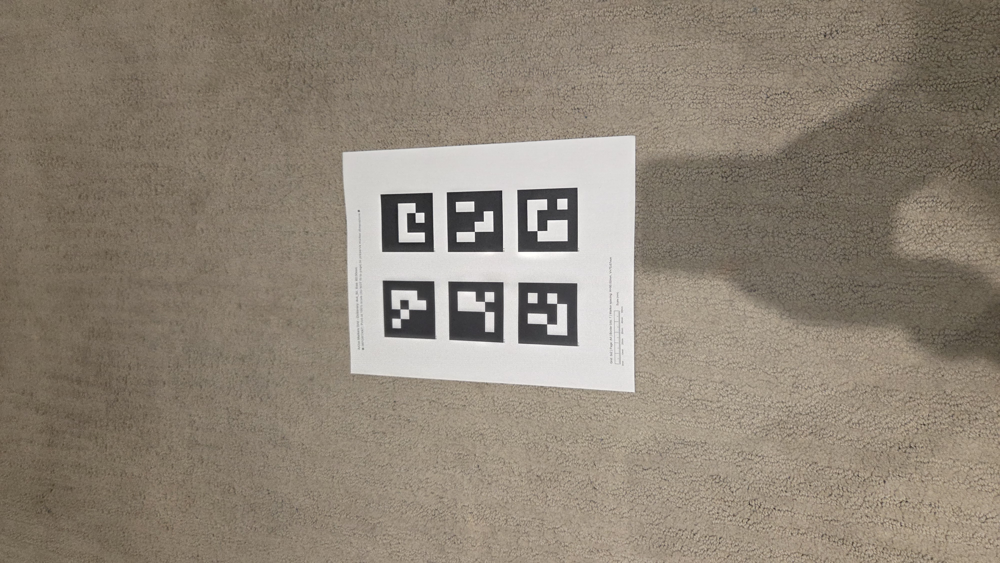
Calibration image 1
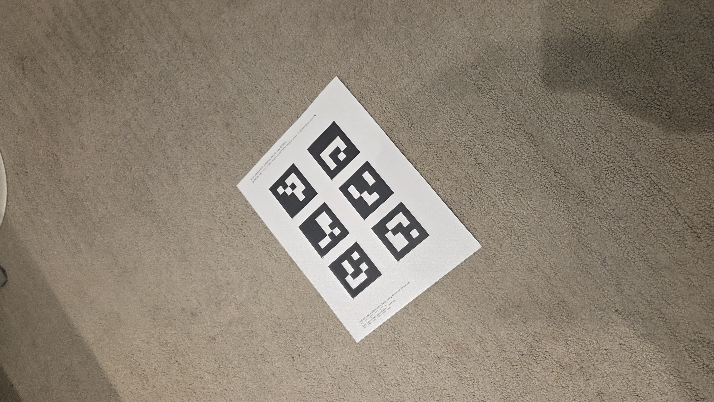
Calibration image 2
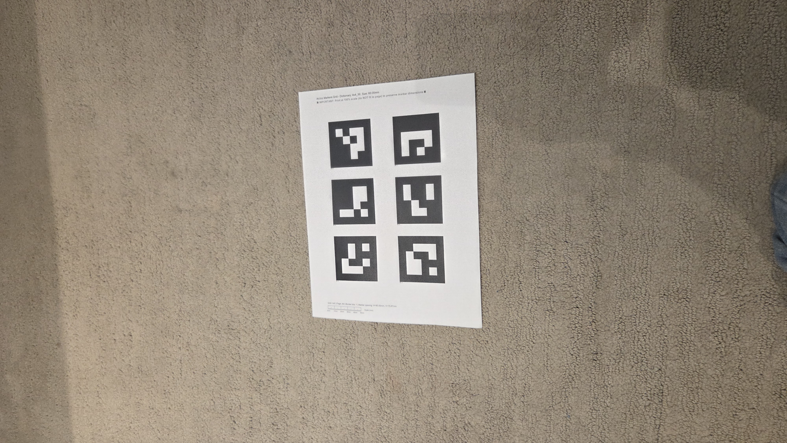
Calibration image 3
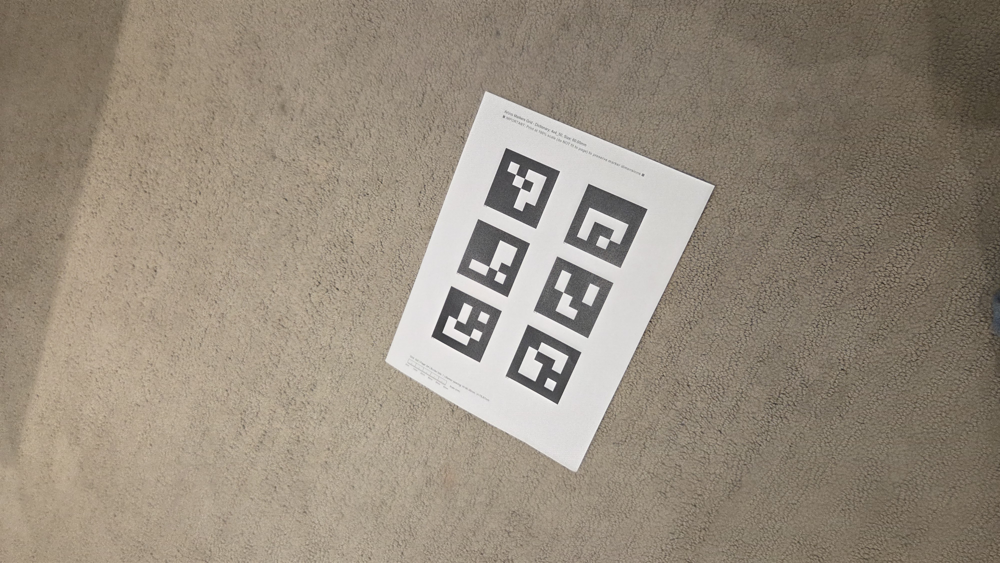
Calibration image 4
Grid layout
2×3 ArUco markers
Dictionary
DICT_4X4_50
Reprojection error
0.66 pixels
Avg focal length
~263.43 px
0.2: Capturing a 3D Object Scan
After calibration, I moved on to the fun part: scanning my plushie. I put a single 60 mm × 60 mm ArUco tag
next to the plush, then walked my phone in a circle around it, changing elevation and distance a bit.
In total, I captured 59 images. Because I’m reusing the same calibrated camera model for all of them,
the poses I recover later will be consistent in the same world coordinate frame.
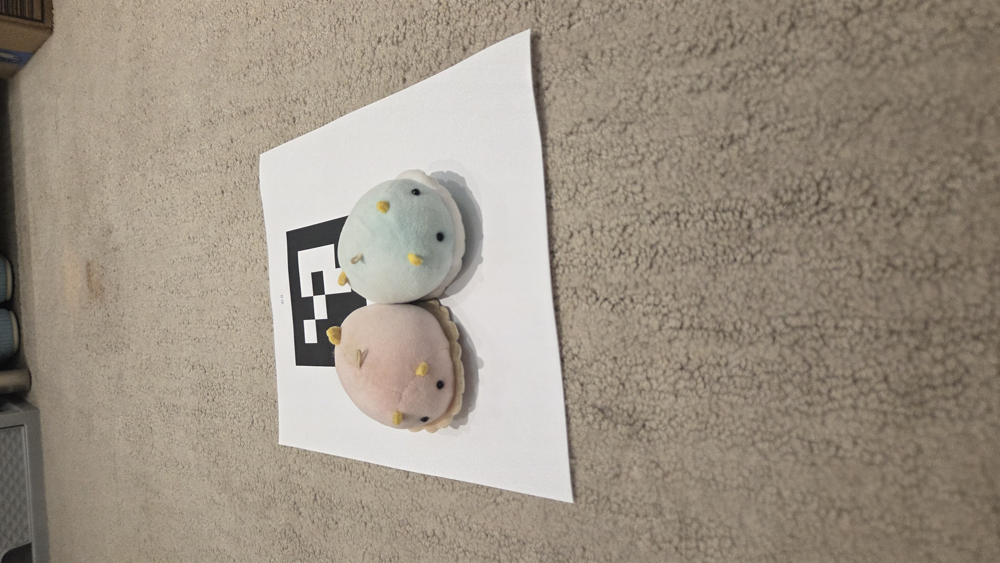
Plush capture 1
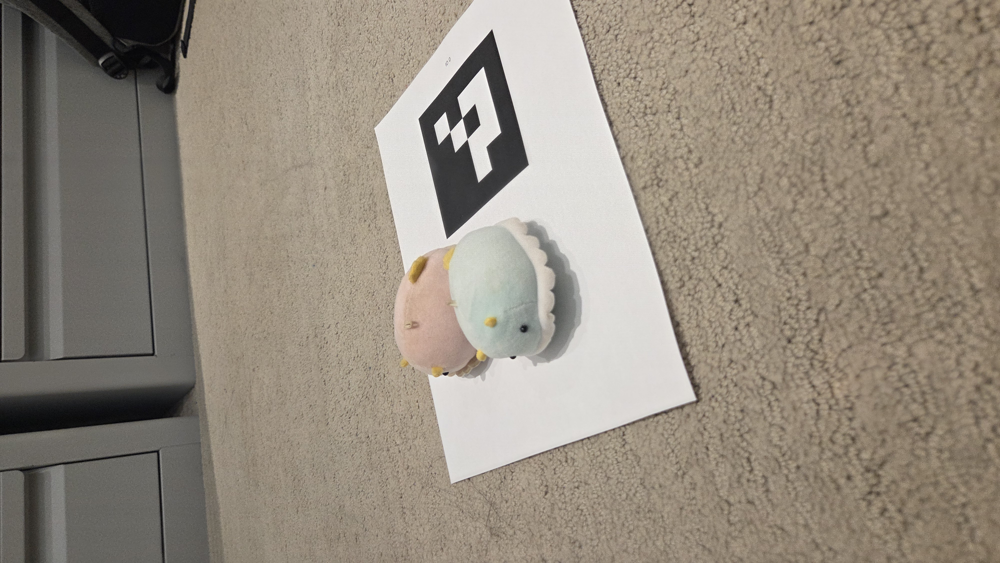
Plush capture 2
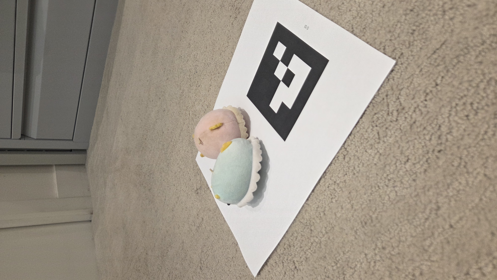
Plush capture 3
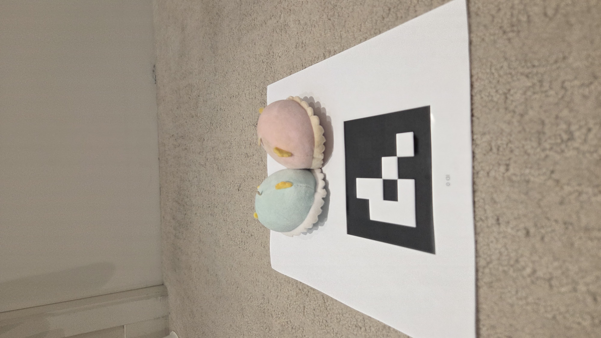
Plush capture 4
# Object images
59 frames
Marker size
60 mm (0.06 m)
0.3: Estimating Camera Pose
For each object image, I detected the single ArUco tag and ran cv2.solvePnP with the known 3D
corners of the tag (now defined in meters: 0.06 m) and their 2D projections. This returns a rotation vector
rvec and translation tvec for the world-to-camera transform.
To get the camera-to-world matrix c2w that NeRF expects, I invert this transform:
Convert rvec → rotation matrix R_w2c via cv2.Rodrigues
To sanity-check the poses, I used Viser to draw each camera as a little frustum in 3D and
color their centers. This made it obvious when a pose was flipped or totally off, and I could throw away
bad frames if needed.
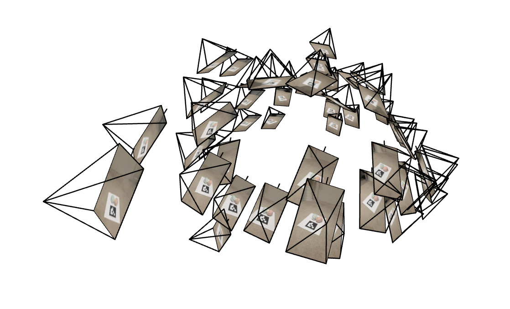
Front/side view
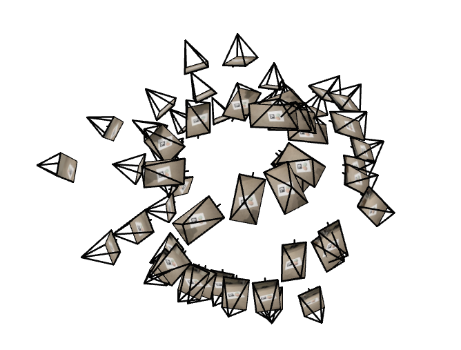
Top-down view
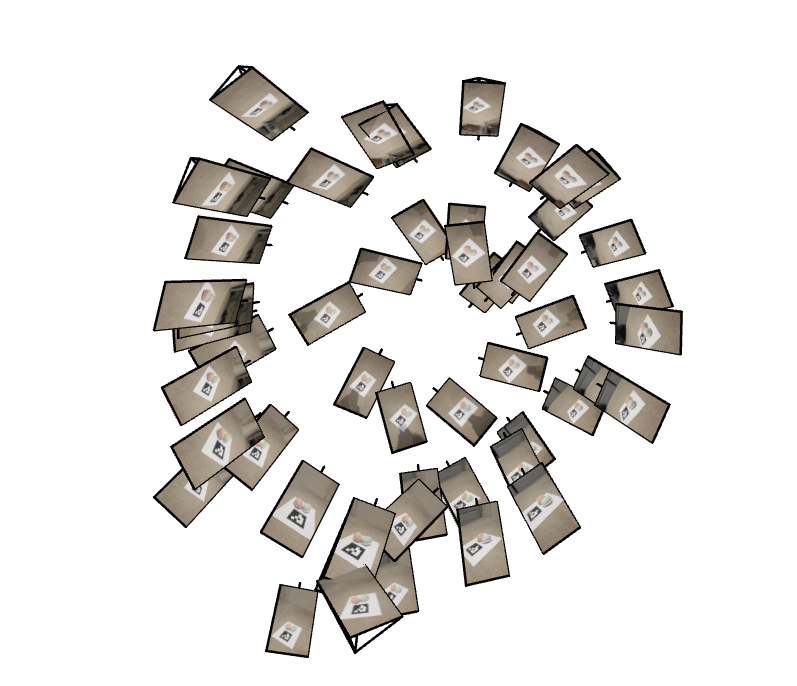
Bottom-up view
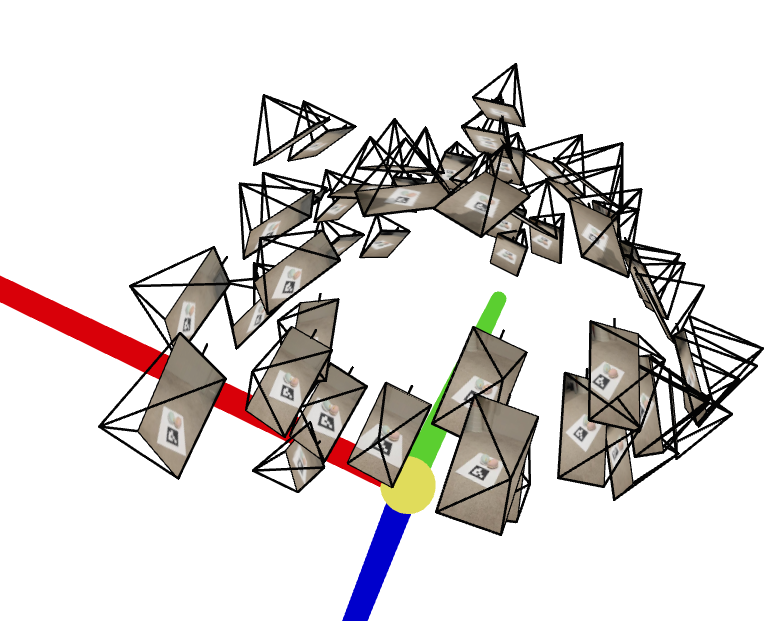
Coordinate view
0.4: Undistorting Images and Creating a Dataset
With K, distortion coefficients, and poses in hand, I turned the raw captures into a NeRF-friendly dataset:
Redetect ArUco and recompute c2w (dropping any frames that fail detection)
Undistort each image using cv2.undistort
Convert BGR → RGB and normalize to [0, 1]
Store each undistorted image with its c2w
I split the dataset deterministically: every 8th frame goes into val/test, the rest go into train:
Training: 46 frames
Validation: 7 frames
Test poses: same 7 camera poses as validation
I also averaged fx and fy to get a single scalar focal length
(focal ≈ 263.43) and packed everything into
nerf_dataset_compressed.npz in the Lego-style format:
images_train, c2ws_train, images_val, c2ws_val,
c2ws_test, focal.
Training frames
46
Validation frames
7
Test poses
7
Output filenerf_dataset_compressed.npz
Part 1: Fit a Neural Field to a 2D Image
In Part 1, I implemented a 2D neural field that learns a continuous function
f(x, y) → RGB for a single image. Instead of storing a pixel grid, the network stores
“how to generate” each pixel when you give it normalized coordinates.
Model Architecture
The model has two main pieces:
Positional Encoding: map 2D coordinates to a higher-dimensional space using sin/cos
at multiple frequencies
MLP: a small fully-connected network on top of the encoded coordinates
Training is done with random pixel sampling: at each iteration I sample 10,000 pixel coordinates,
query the model, and minimize MSE to the ground truth RGB.
Hidden layers
3 layers
Width
256 neurons
PE frequency (L)
10
Batch size
10,000 pixels
Iterations
1,000
Training Progression
The Fox image starts off super blurry and slowly sharpens as training goes on. PSNR goes from
9.94 dB → 26.00 dB (a gain of 16.06 dB).
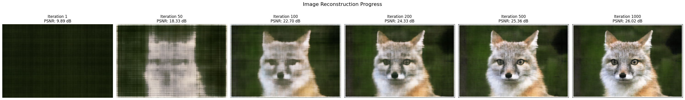
Fox training progression
The Doll image converges even better, from 11.85 dB → 30.09 dB (18.24 dB gain). It’s pretty cool to see a
“pure function” reconstruct a detailed picture just from coordinates and loss feedback.
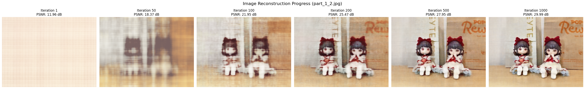
Doll training progression
Hyperparameter Sweep (2×2 Grid)
I tried different combinations of positional encoding frequency (L = 3 vs 10) and width (64 vs 256).
Lower L behaves like a “smooth painter” and misses details; higher L captures high-frequency content.
Wider networks help, but only if the encoding actually gives them high-frequency information to learn.
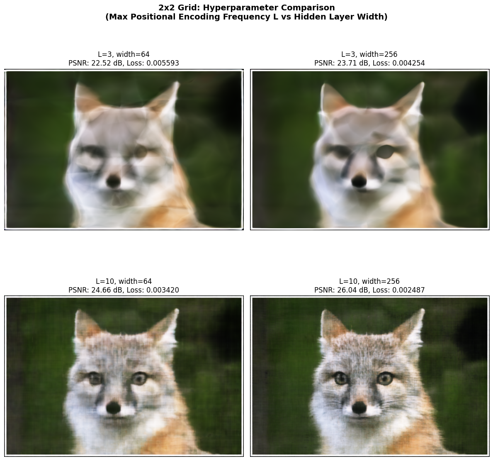
Hyperparameter sweep results (L and width)
PSNR Curves
The PSNR curves show a steady improvement over iterations. The Doll image ends up with higher PSNR, which
matches the visual impression (it looks sharper at the end).
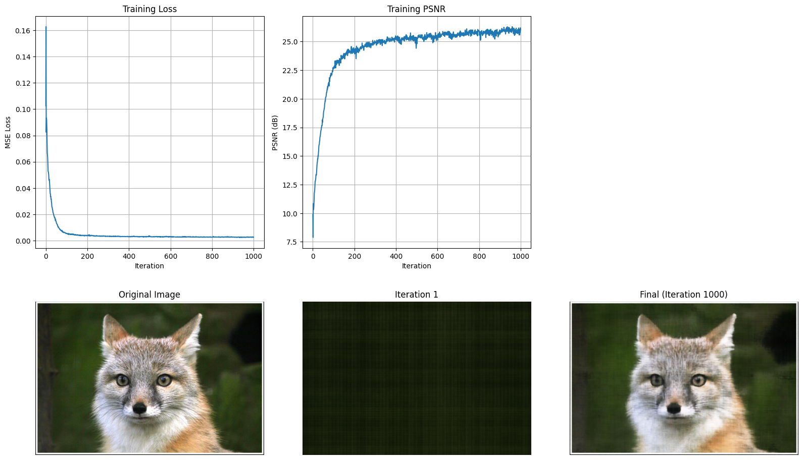
Fox PSNR curve
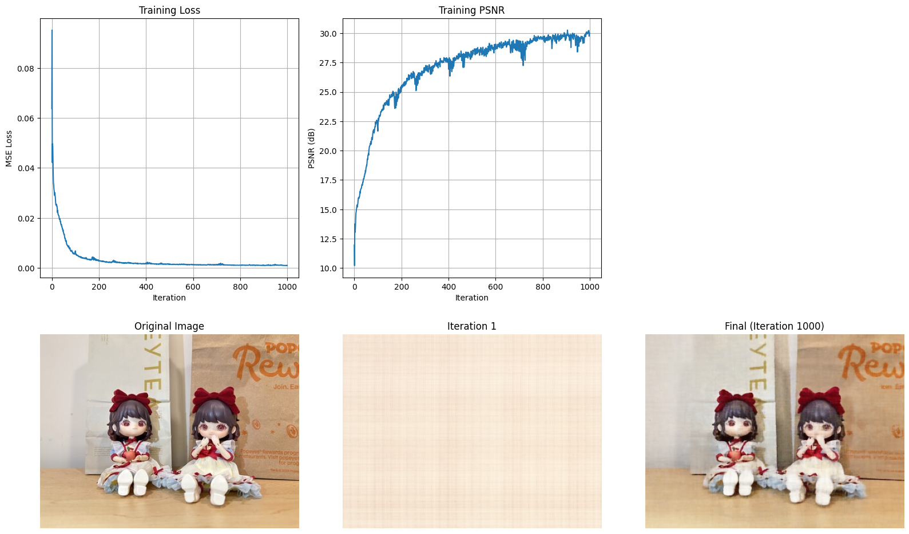
Doll PSNR curve
Part 2: Fit a Neural Radiance Field from Multi-view Images
In Part 2, I extended the 2D idea to 3D and built a full NeRF for the Lego dataset. The pipeline is:
cameras → rays → 3D samples → NeRF MLP → volume rendering → RGB image.
2.1: Create Rays from Cameras
I implemented three helper functions to connect pixels, cameras, and rays:
transform(c2w, x_c): camera → world coordinates
pixel_to_camera(K, uv, s): pixel → camera coordinates at depth s
pixel_to_ray(K, c2w, uv): puts everything together and returns ray origins + directions
I verified this by visualizing cameras and rays in Viser and checking that rays originate from the right places
and go through the expected pixels.
2.2: Sampling
To feed the NeRF, each ray needs to be discretized into a bunch of 3D sample points between a near and far plane.
For the Lego scene I used near = 2.0, far = 6.0, and
n_samples = 64. During training, I turn on perturbation; for rendering final images I turn it off.
2.3: Putting the Dataloading All Together
Rather than pre-baking rays, I sample them on the fly each iteration. This keeps memory usage manageable and
gives SGD a more diverse view of the data.
For Lego, there are 100 training images, each 200×200, so in total 4M possible rays. Each iteration I
randomly sample 10,000 rays from this pool.
Viser Visualization
To debug, I again used Viser: show all training cameras, randomly pick 100 rays, and plot the sample points
along each ray. This made it much easier to catch off-by-one or coordinate mistakes.
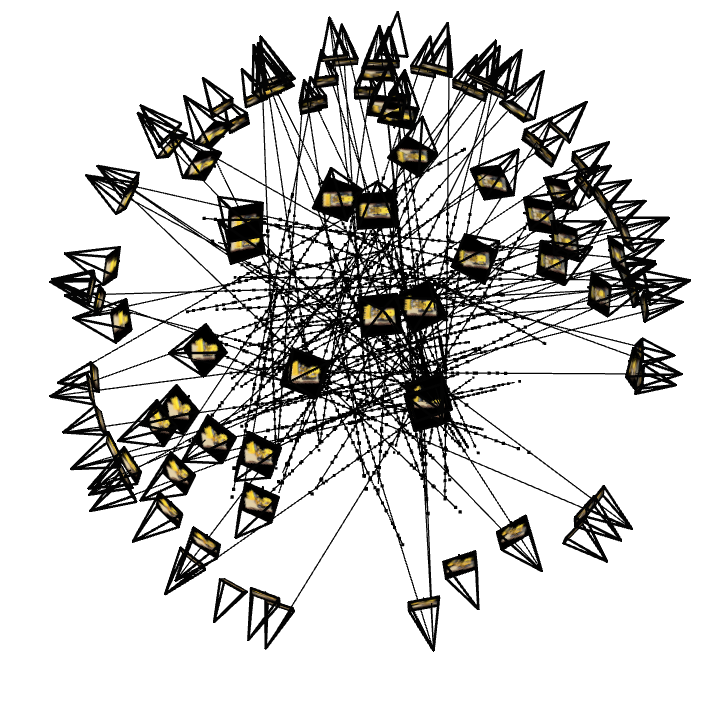
Full scene: cameras, rays, and samples
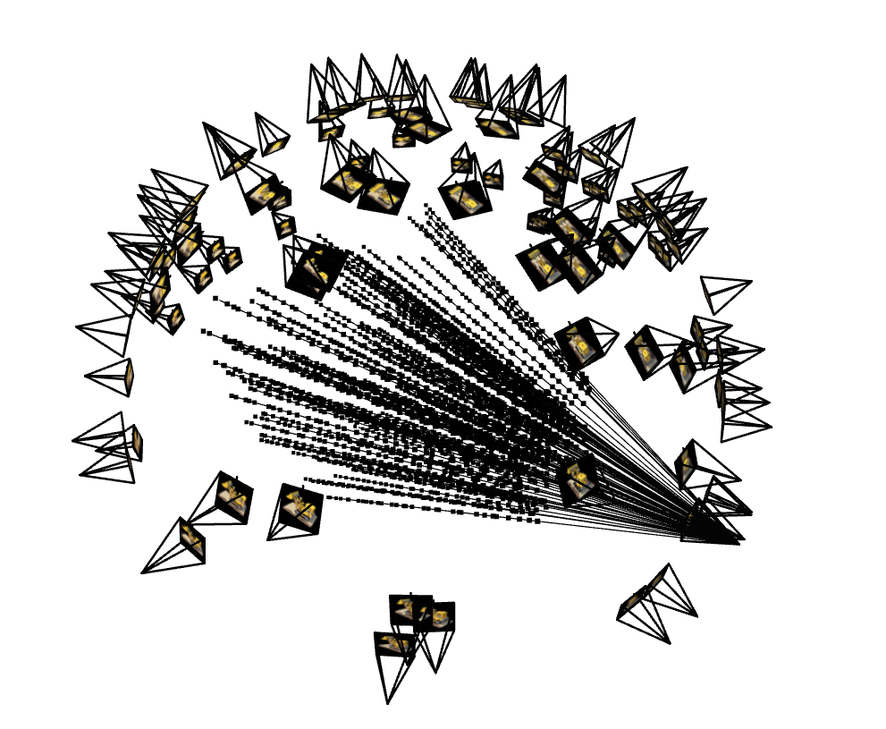
Close-up view of sampled points
2.4: Neural Radiance Field
The NeRF MLP takes in a 3D point and a viewing direction and outputs density σ and RGB color.
Both the position and direction are first encoded by sinusoidal positional encodings.
MLP NeRF pipeline
Hidden dim
256
Layers
8 (skip at 4)
Pos PE (x)
L=10 (63-dim)
Dir PE (d)
L=4 (27-dim)
Total params
595,844
2.5: Volume Rendering & Training
Given densities and colors at sample points along each ray, I used the NeRF volume rendering equation to
composite a final RGB value per ray.
The training loop for Lego looks like:
Sample 10,000 rays using get_rays_from_images
Sample 64 points along each ray (with perturbation)
Query NeRF to get σ and RGB at each point
Volume render to get the final color per ray
Compute MSE loss against target colors and backprop
I used Adam with learning rate 5e-4. Every 100 iterations I rendered a validation image and computed PSNR.
The PSNR curve crosses the 23 dB threshold required by the spec.
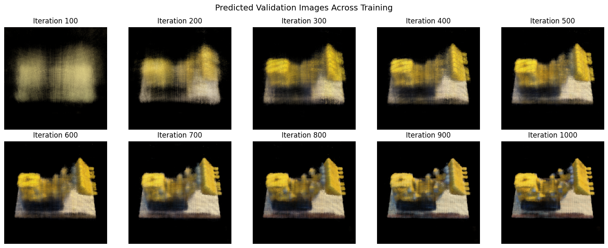
Lego training progression
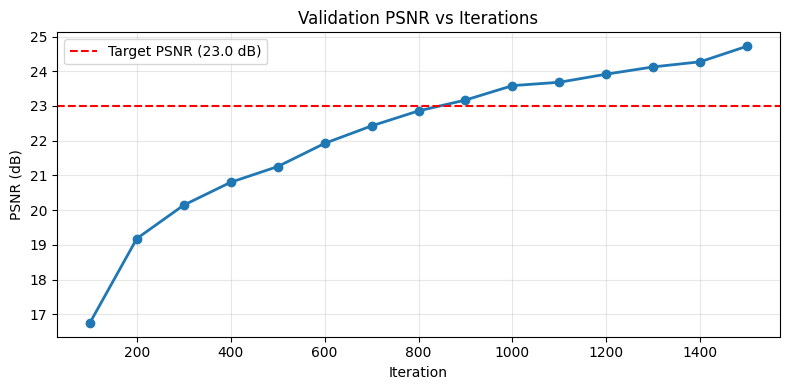
Validation PSNR curve
Spherical Rendering
Using the c2ws_test camera poses, I rendered a “spherical” novel view video of the Lego scene.
For each test pose, I rendered a full 200×200 image and then stitched all frames into an MP4 at 30 FPS.
Spherical Lego rendering
2.6: Training with Your Own Data
Finally, I reused the exact same NeRF code on my own dataset from Part 0. The only pieces I changed were the
dataset file, image size, and near/far bounds.
Setup & Hyperparameters
From nerf_dataset_compressed.npz, I loaded:
images_train, c2ws_train, images_val, c2ws_val,
c2ws_test, and focal.
The images are 400×225, and the object is much closer to the camera compared to Lego, so I used:
Near / Far
0.02 / 0.5
Samples / ray
64
Batch size
10k rays
Optimizer
Adam, lr = 5e-4
Iterations
500 (for my run)
Image size
400×225
Training Behavior
The training loop is identical to Lego: dynamic ray sampling, stratified sampling along rays, NeRF forward,
volume rendering, MSE loss. The loss curve decreases smoothly, and the intermediate renders gradually fill in
the plush’s geometry and texture.
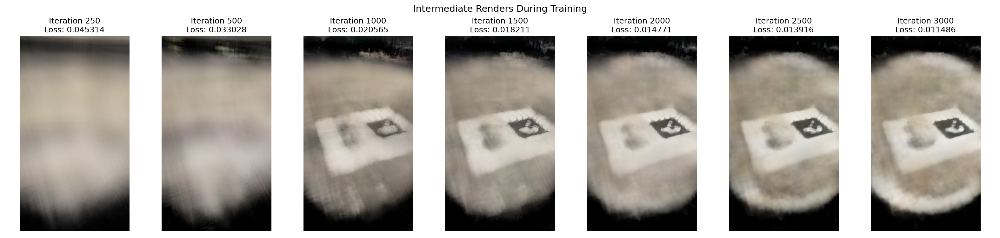
Training progression (plush)
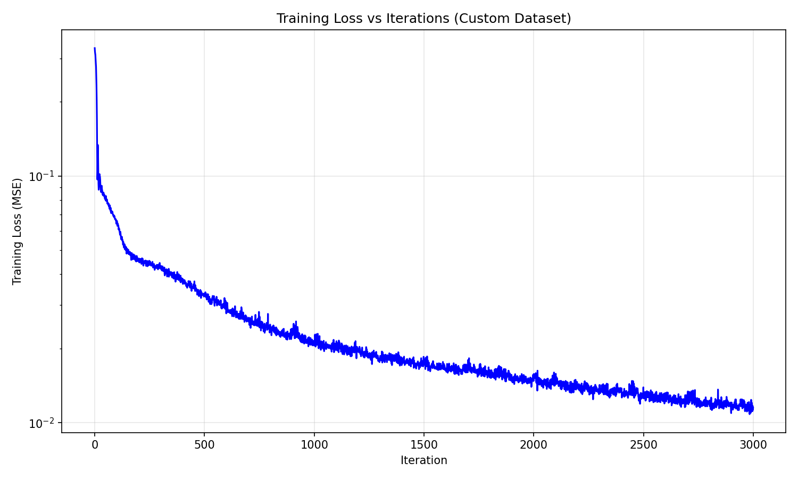
Training loss curve
Novel View Rendering
To visualize the learned radiance field, I generated novel camera poses along a circle using a helper
look_at_origin function and a rotation-around-z routine. For each pose, I rendered a full image and
combined them into a GIF of the camera orbiting my plushie.
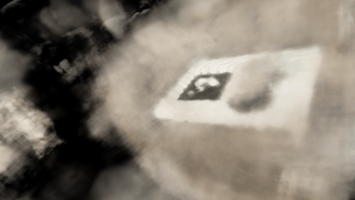
Novel-view GIF around my plush
Staff Dataset (lafufu)
I also tried the staff-provided lafufu dataset. Again, I just swapped the dataset file and adjusted the bounds,
and the same NeRF code could render smooth novel views of the plush.